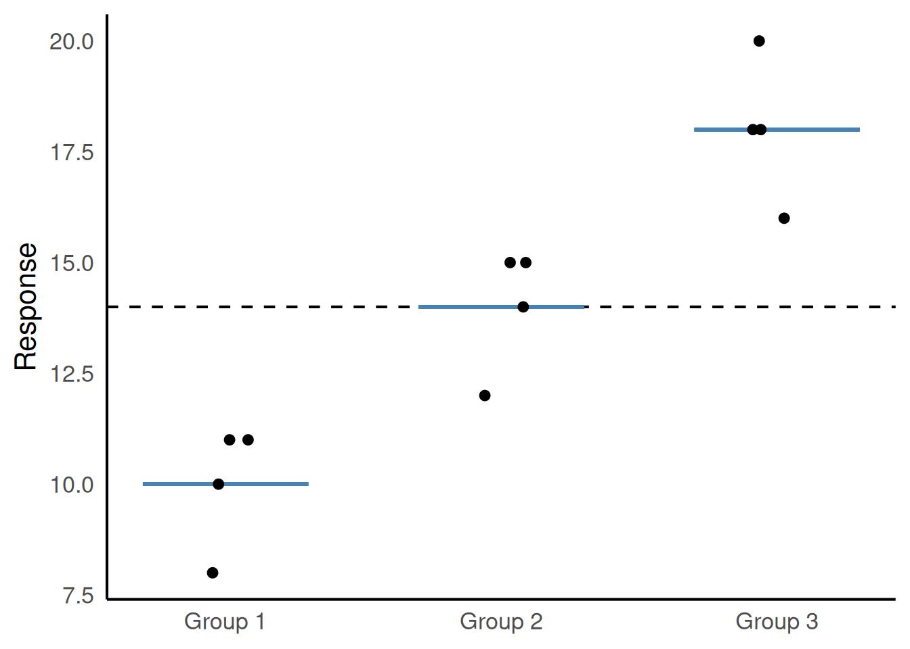
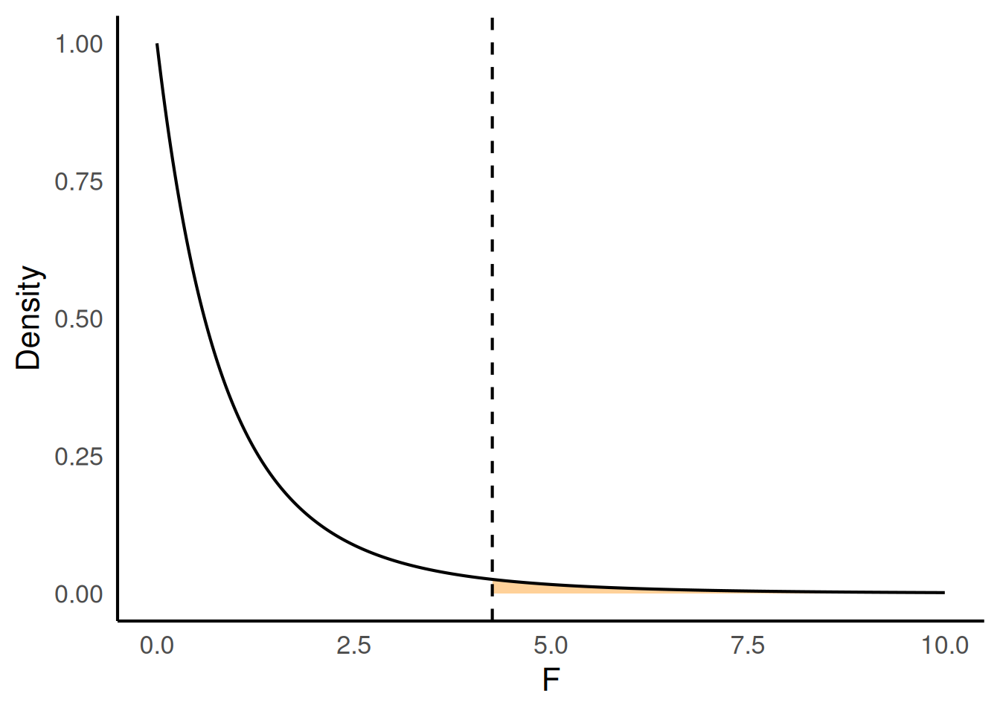
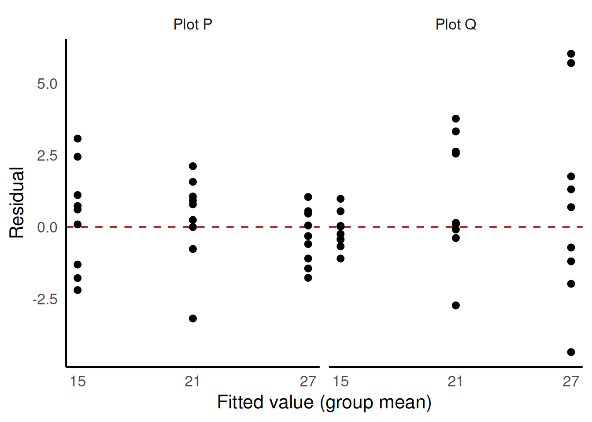
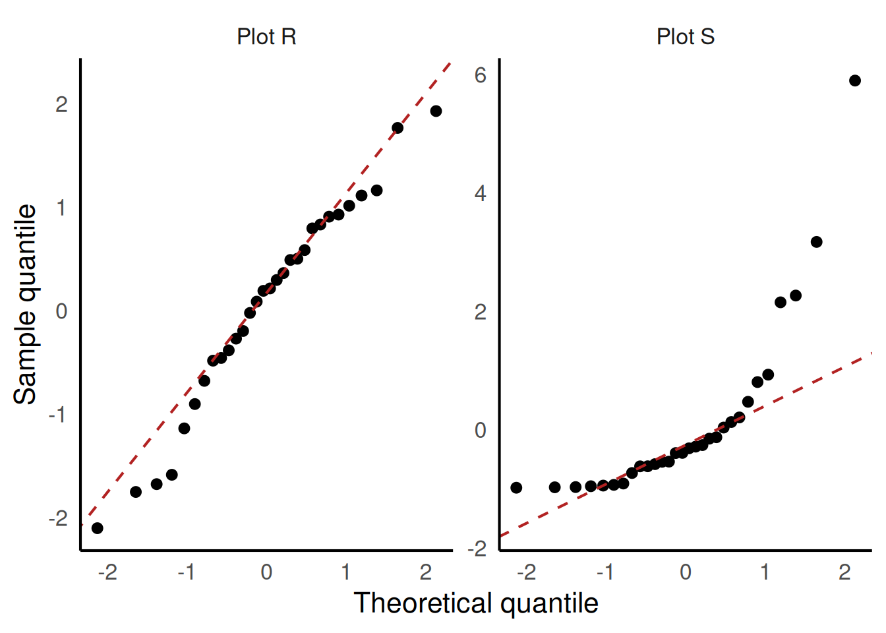

Calculating F and checking the model
This page summarises what we covered in the first hour of the ANOVA session, which was done on paper (students with an agreed adjustment used a computer). Use it for revision; the full activities were worked through in class. The computer work in Posit Cloud is in the second hour. Each student worked on a card of their own data, so the worked example below uses a different data set.
Progression: split the variation → compare signal with noise → F = MS group ÷ MS residual → check that the residuals behave.
From a line to group means
Last week the fitted values lay on a line, and the sum of squared residuals (SSR) measured how far the points were from it. This week the predictor is a group label, so the fitted value for every observation is its group mean. The residual is still observed minus fitted.
Figure 1 shows 12 observations in three groups. The dashed line is the grand mean, the mean of all 12 values.
For the highest point in Group 3 (y = 20), the distance from the grand mean splits into two parts: 4 from the grand mean to the group mean (18 − 14), and 2 from the group mean to the point (20 − 18). Together they make the total distance of 6.
NoteThe rule
Every observation’s distance from the grand mean splits into the part explained by its group (group mean − grand mean) and the residual (observation − group mean). Squaring these distances and adding them over all observations gives SS total = SS group + SS residual. SS residual is last week’s SSR, the sum of squared residuals. This session writes SS residual so that it is not confused with “sum of squares for regression”, which some books also abbreviate to SSR.
The sums of squares by hand
Each student copied the 12 values of their card into a table with four columns: y − grand mean and its square, and y − group mean and its square. The two squared columns add up to SS total and SS residual. SS group is the difference. A check on the arithmetic is that the residuals (y − group mean) add up to zero within each group.
For the data in Figure 1:
| Quantity | Calculation | Value |
|---|---|---|
| SS total | sum of (y − 14)² over all 12 observations | 148 |
| SS residual | sum of (y − group mean)² within the three groups: 6 + 6 + 8 | 20 |
| SS group | SS total − SS residual | 128 |
From sums of squares to F
Each sum of squares is divided by its degrees of freedom to give a mean square. For \(k = 3\) groups and \(N = 12\) observations, the group has \(k - 1 = 2\) degrees of freedom and the residual has \(N - k = 9\).
| Source | df | SS | MS | F |
|---|---|---|---|---|
| Group | 2 | 128 | 64 | 28.8 |
| Residual | 9 | 20 | 2.22 | |
| Total | 11 | 148 |
F = 64 ÷ 2.22 = 28.8, and R² = 128 ÷ 148 = 0.87. Figure 2 shows how F behaves when the null hypothesis is true. The critical value for these degrees of freedom is 4.26, so F = 28.8 lies far in the right-hand tail and the p-value is about 0.0001.

NoteThe rule
F = MS group ÷ MS residual: the variation between the group means (signal) divided by the variation within the groups (noise). If the group means differ only by chance, F is usually close to 1. The p-value is the area to the right of F in an F-distribution with k − 1 and N − k degrees of freedom. R² = SS group ÷ SS total, and means the same as it did in last week’s regression. A significant F says that at least one group mean differs. It does not say which one. With two groups, F is exactly the square of the t statistic from a t-test that pools the variance.
Check your understanding. \(MS_{group}\) is 50 and \(MS_{residual}\) is 5. F is . A study has 4 groups of 6 observations each. The group degrees of freedom are and the residual degrees of freedom are .
Checking the model
Last week you used a residual plot to check whether a straight line was adequate. The same residuals are used here. Because every fitted value is a group mean, the residual plot for an ANOVA shows one vertical stripe of points for each group. Students sketched their own residuals, then matched four diagnostic plots, similar to those in Figure 3 and Figure 4, to the assumption each checks.


NoteThe rule
A one-way ANOVA assumes that the residuals are roughly normally distributed (check with a QQ plot), that the spread of the residuals is similar in every group (check with residuals against fitted values), and that the observations are independent (this comes from the design, not from a plot). A check for a straight line is not needed when the only predictor is a group label, because each group has its own mean. With few observations, plots are hard to read.
Check your understanding. Which plot in the figures above suggests that the spread of the residuals is not the same in every group?
Which assumption cannot be checked from either kind of plot?
Predictions for hour 2
At the end of the hour you wrote two predictions on Part E of the worksheet about the frogspawn experiment: whether F will be close to 1 or much larger than 1, and which diagnostic plots the residuals will resemble. Bring them, and your Part B, C and D working, to hour 2. Each one is tested there.
Exit ticket
The question posed at the end of the hour:
Two experiments have identical group means. In experiment 2 the standard deviation within every group is twice as large as in experiment 1. By what factor does F change? Explain in one or two sentences.